자동차정비기사 (2020-09-26 기출문제)
1과목: 일반기계공학
1. 송출량이 많고 저양정인 경우 적합하며 회전차의 날개가 선박의 스크루 프로펠러와 유사한 형상의 펌프는?
- 터빈 펌프
- 기어 펌프
- 축류 펌프
- 왕복 펌프
(정답률: 50%)

2. 주로 나무나 가죽, 베크라이트 등 비금속이나 연한 금속의 거친 가공에 가장 적합한 중(file)은?
- 귀목(rasp cut)
- 단목(single cut)
- 복목(double cut)
- 파목(curved cut)
(정답률: 47%)
3. 용접 이음의 장점이 아닌 것은?
- 자재가 절약된다.
- 공정수가 증가된다.
- 이음효율이 향상된다.
- 기밀 유지성능이 좋다.
(정답률: 65%)
4. 동력 전달용 나사가 아닌 것은?
- 관용 나사
- 사각 나사
- 둥근 나사
- 톱니 나사
(정답률: 56%)
5. 그림과 같은 블록 브레이크에서 드럼 축의 레버를 누르는 힘(F)을 우회전할 때는 F1, 좌회전할 때는 F2라고 하면
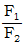
의 값은? (단, 중작용선이며 모두 동일한 제동력을 발생시키는 것으로 가정한다.)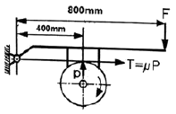
- 0.25
- 0.5
- 1
- 4
(정답률: 53%)
6. 지름 20mm, 인장강도 42MPa의 둥근 봉이 지탱할 수 있는 허용범위 내 최대하중(N)은 얼마인가? (단, 안전율은 7이다.)
- 1884
- 2235
- 3524
- 4845
(정답률: 37%)
7. 그림과 같은 외팔보의 끝단에 집중하중 P가 작용할 때 최소 처짐이 발생하는 단면은? (단, 보의 길이와 재질은 같다.)
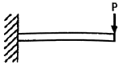
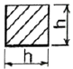
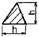
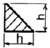
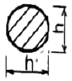
(정답률: 50%)
8. 유량이나 입구 측의 유압과는 관계없이 미리 설정한 2차측 압력을 일정하게 유지하는 것은?
- 체크 밸브
- 리듀싱 밸브
- 시퀀스 밸브
- 릴리프 밸브
(정답률: 42%)
9. 주축의 회전운동을 직선 왕복운동으로 바꾸는데 사용하는 밀링 머신의 부속장치는?
- 분할대
- 슬로팅 장치
- 래크 절삭 장치
- 로터리 밀링 헤드 장치
(정답률: 50%)
10. 일반적인 구리의 특성으로 틀린 것은?
- 전기 및 열의 전도성이 우수하다.
- 아름다운 광택과 귀금속적 성질이 우수하다.
- Zn, Sn, Ni, Ag 등과 쉽게 합금을 만들 수 있다.
- 기계적 강도가 높아 공작기계의 주축으로사용된다.
(정답률: 50%)
11. KS규격에 의한 구름 베어링의 호칭번호 6200ZZ에서 “ZZ”의 의미로 옳은 것은?
- 한쪽 실붙이
- 링 홈붙이
- 양쪽 실드붙이
- 멈춤 링붙이
(정답률: 59%)
12. 키(key)의 설계에서 강도상 주로 고려해야 하는 것은?
- 키의 굽힘응력과 전단응력
- 키의 전단응력과 인장응력
- 키의 인장응력과 압축응력
- 키의 전단응력과 압축응력
(정답률: 36%)
13. 평벨트 전동장치와 비교한 V-벨트 전동장치의 특징으로 옳은 것은?
- 두 축의 회전방향이 다른 경우에 적합하다.
- 평벨트 전동에 비해 전동 효율이 나쁘다.
- 축간거리가 짧고 큰 속도비에 적합하다.
- 5m/s 이하의 저속으로만 운전이 가능하다.
(정답률: 62%)
14. 측정하고자 하는 축을 V블록 위에 올려놓은 뒤 다이얼 게이지를 설치하고 회전하였더니 눈금 값이 1mm라면 이 축의 진원도(mm)는?
- 2
- 1
- 0.5
- 0.25
(정답률: 49%)
15. 일반적인 유량측정 기기에 해당하는 것은?
- 피토 정압관
- 피토관
- 시차 액주계
- 벤투리미터
(정답률: 48%)
16. 지름 2.5cm의 연강봉 양단을 강성벽에 고정한 후 30℃에서 0℃까지 냉각되었을 경우 연강봉에 생기는 압축응력(kPa)은? (단, 연강의 선팽창 계수는 0.000012, 세로탄성계수는 210MPa이다.)
- 37.1
- 75.6
- 371
- 756
(정답률: 48%)
17. 비틀림 모멘트를 받아 전단응력이 발생되는 원형 단면 축에 대한 설명으로 틀린 것은?
- 전단응력은 지름의 세제곱에 반비례한다.
- 전단응력은 비틀림 모멘트와 반비례한다.
- 전단응력을 구할 때 극단면계수도 이용한다.
- 중실 원형축의 지름을 2배로 증가시키면 비틀림 모멘트는 8배가 된다.
(정답률: 47%)
18. 정밀주조법 중 셀 몰드법의 특징이 아닌 것은?
- 치수 정밀도가 높다.
- 합성수지의 가격이 저가이다.
- 제작이 용이하며 대량생산에 적합하다.
- 모래가 적게 들고 주물의 뒤처리가 간단하다.
(정답률: 44%)
19. 구상 흑연 주철에 관한 설명으로 틀린 것은?
- 단조가 가능한 주철이다.
- 차량용 부품이나 내마모용으로 사용한다.
- 노듈러 또는 덕타일 주철이라고도 한다.
- 인장강도가 50~70 kgf/mm2 정도인 것도 있다.
(정답률: 48%)
20. 프레스 가공이나 주조 가공 등으로 생산된 제품의 불필요한 테두리나 핀 등을 잘라 내거나 따내어 제품을 깨끗이 정형하는 작업은?
- 펀칭
- 블랭킹
- 세이빙
- 트리밍
(정답률: 53%)
2과목: 기계열역학
21. 최고온도 1300K와 최저온도 300K 사이에서 작동하는 공기표준 Brayton 사이클의 열효율(%)은? (단, 압력비는 9, 공기의 비열비는 1.4이다.)
- 30.4
- 36.5
- 42.1
- 46.6
(정답률: 22%)
22. 내부 에너지가 30kJ인 물체에 열을 가하여 내부 에너지가 50kJ이 되는 동안에 외부에 대하여 10kJ의 일을 하였다. 이 물체에 가해진 열량(kJ)은?
- 10
- 20
- 30
- 60
(정답률: 44%)
23. 풍선에 공기 2kg이 들어 있다. 일정 압력 500kPa 하에서 가열 팽창하여 체적이 1.2배가 되었다. 공기의 초기온도가 20℃일 때 최종온도(℃)는 얼마인가?
- 32.4
- 53.7
- 78.6
- 92.3
(정답률: 23%)
24. 성능계쑤가 3.2인 냉동기가 시간당 20MJ의 열을 흡수한다면 이 냉동기의 소비동력(kW)은?
- 2.25
- 1.74
- 2.85
- 1.45
(정답률: 36%)
25. 이상적인 디젤 기관의 압축비가 16일 때 압축 전의 공기 온도가 90℃라면 압축 후의 공기의 온도(℃)는 얼마인가? (단, 공기의 비열비는 1.4이다.)
- 1101.9
- 718.7
- 808.2
- 827.4
(정답률: 30%)
26. 어떤 가스의 비내부에너지 u(kJ/kg), 온도 t(℃), 압력 P(kPa), 비체적 v(m3/kg) 사이에는 아래의 관계식이 성립한다면, 이 가스의 정압비열(kJ/kg·℃)은 얼마인가?
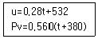
- 0.84
- 0.68
- 0.50
- 0.28
(정답률: 23%)
27. 랭킨사이클의 각 점에서의 엔탈피가 아래와 같을 때 사이클의 이론 열효율(%)은?
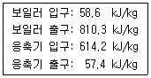
- 32
- 30
- 28
- 26
(정답률: 34%)
28. 다음 중 경로함수(path function)는?
- 엔탈피
- 엔트로피
- 내부에너지
- 일
(정답률: 39%)
29. 엔트로피(s) 변화 등과 같은 직접 측정할 수 없는 양들을 압력(P), 비체적(v), 온도(T)와 같은 측정 가능한 상태량으로 나타내는 Maxwell 관계식과 관련하여 다음 중 틀린 것은?
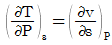
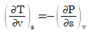
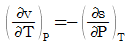
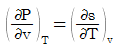
(정답률: 39%)
30. 고온 열원의 온도가 700℃이고, 저온 열원의 온도가 50℃인 카르노 열기관의 열효율(%)은?
- 33.4
- 50.1
- 66.8
- 78.9
(정답률: 44%)
31. 랭킨사이클에서 25℃, 0.01MPa 압력의 물 1 kg을 5MPa 압력의 보일러로 공급한다. 이때 펌프가 가역단열과정으로 작용한다고 가정할 경우 펌프가 한 일(kJ)은? (단, 물의 비체적은 0.001 m3/kg이다.)
- 2.58
- 4.99
- 20.12
- 40.24
(정답률: 39%)
32. 처음 압력이 500kPa이고, 체적이 2m3인 기체가 “PV=일정”인 과정으로 압력이 100kPa까지 팽창할 때 밀폐계가 하는 일(kJ)을 나타내는 계산식으로 옳은 것은?
- 1000ln
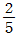
- 1000ln
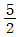
- 1000ln5
- 1000ln
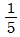
(정답률: 36%)
33. 자동차 엔진을 수리한 후 실린더 블록과 헤드 사이에 수리 전과 비교하여 더 두꺼운 게스킷을 넣었다면 압축비와 열효율은 어떻게 되겠는가?
- 압축비는 감소하고, 열효율도 감소한다.
- 압축비는 감소하고, 열효율도 증가한다.
- 압축비는 증가하고, 열효율도 감소한다.
- 압축비는 증가하고, 열효율도 증가한다.
(정답률: 48%)
34. 냉매로서 갖추어야 될 요구 조건으로 적합하지 않은 것은?
- 불활성이고 안정하며 비가연성 이어야 한다.
- 비체적이 커야 한다.
- 증발 온도에서 높은 잠열을 가져야 한다.
- 열전도율이 커야한다.
(정답률: 41%)
35. 이상적인 가역과정에서 열량 △Q가 전달될 때, 온도 T가 일정하면 엔트로피 변화 △S를 구하는 계산식으로 옳은 것은?
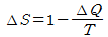
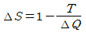
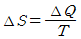
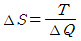
(정답률: 40%)
36. 어떤 이상기체 1kg이 압력 100kPa, 온도 30℃의 상태에서 체적 0.8m3을 점유한다면 기체상수(kJ/kg·K)는 얼마인가?
- 0.251
- 0.264
- 0.275
- 0.293
(정답률: 38%)
37. 그림과 같이 A, B 두 종류의 기체가 한 용기 안에서 박막으로 분리되어 있다. A의 체적은 0.1m3, 질량은 2kg이고, B의 체적은 0.4m3, 밀도는 1kg/m3이다. 박막이 파열되고 난 후에 평형에 도달하였을 때 기체 혼합물의 밀도(kg/m3)는 얼마인가?
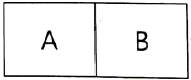
- 4.8
- 6.0
- 7.2
- 8.4
(정답률: 40%)
38. 비가역 단열변화에 있어서 엔트로피 변화량은 어떻게 되는가?
- 증가한다.
- 감소한다.
- 변화량은 없다.
- 증가할 수도 감소할 수도 있다.
(정답률: 23%)
39. 원형 실린더를 마찰 없는 피스톤이 덮고 있다. 피스톤에 비선형 스프링이 연결되고 실린더 내의 기체가 팽창하면서 스프링이 압축된다. 스프링의 압축 길이가 Xm일 때 피스톤에는 kX1.5N의 힘이 걸린다. 스프링의 압축 길이가 0m에서 0.1m로 변하는 동안에 피스톤이 하는 일은 Wa이고, 0.1m에서 0.2m로 변하는 동안에 하는 일이 Wb라면 Wa/Wb는 얼마인가?
- 0.083
- 0.158
- 0.214
- 0.333
(정답률: 14%)
40. 밀폐계에서 기체의 압력이 100kPa으로 일정하게 유지되면서 체적이 1m3에서 2m3으로 증가되었을 때 옳은 설명은?
- 밀폐계의 에너지 변화는 없다.
- 외부로 행한 일은 100kJ이다.
- 기체가 이상기체라면 온도가 일정하다.
- 기체가 받은 열은 100kJ이다.
(정답률: 43%)
3과목: 자동차기관
41. 디젤 엔진의 고압연료 분사장치에서 노크를 방지하기 위해 초기 분사량을 최소화하고 착화 이후의 분사량을 크게 하도록 설계된 분사노즐은?
- 다공 홀 노즐
- 단공 홀 노즐
- 스로틀형 노즐
- 원통형 핀틀 노즐
(정답률: 64%)
42. 가솔린 엔진의 노크 발생원인과 거리가 먼 것은?
- 혼합비가 농후할 때
- 엔진이 과열되었을 때
- 제동평균유효압력이 높을 때
- 저옥탄가의 가솔린을 사용하였을 때
(정답률: 30%)
43. 자동차 엔진에서 피스톤 링의 기능이 아닌 것은?
- 열전도 작용
- 연료 공급 작용
- 오일 제어 작용
- 기밀유지 작용
(정답률: 67%)
44. 디젤 엔진의 회전속도가 1500rpm일 때 분사지연과 착화지연시간을 합쳐
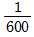
초면 상사점 전 몇 도(°)에서 연료가 분사되는가? (단, 최대폭팔 압력은 상사점에서 발생한다.)- 8°
- 10°
- 12°
- 15°
(정답률: 39%)
45. 전자제어 가솔린 엔진의 연료분사장치에서 엔진부하와 엔진회전수에 따라 신호 전압이 급격히 변화하는 센서는?
- 차속 센서
- MAP 센서
- 캠 포지션 센서
- 크랭크 포지션 센서
(정답률: 50%)
46. 가솔린 엔진의 인젝터 작동 시 연료 분사량에 가장 큰 영향을 주는 것은?
- 니들 밸브의 지름
- 니들 밸브의 유효 행정
- 인젝터 솔레노이드 코일의 통전 시간
- 인젝터 솔레노이드 코일의 통전 전류
(정답률: 57%)
47. LPG 엔진에서 기체 및 액체 연료를 차단 또는 공급하는 밸브는?
- 감압 밸브
- 압력 밸브
- 체크 밸브
- 솔레노이드 밸브
(정답률: 60%)
48. 내연기관의 열역학적 정압 사이클에서 이론 열효율 η을 구하는 식으로 옳은 것은? (단, ε:압축비, k:비열비, σ:단절비이다.)
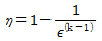
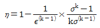
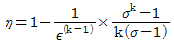
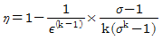
(정답률: 46%)
49. 베어링 크러시(bearing crush)에 대한 설명으로 틀린 것은?
- 베어링의 안 둘레와 하우징 바깥 둘레와의 차이를 베어링 크러시라 한다.
- 베어링에 공급된 오일을 베어링의 전 둘레에 순환하게 한다.
- 크러시가 크면 조립할 때 베어링이 안쪽 면으로 변형되어 찌그러진다.
- 크러시가 작으면 온도 변화에 의하여 헐겁게 되어 베어링이 유동한다.
(정답률: 43%)
50. 전자제어 가솔린 엔진에서 엔진의 최대토크 구현을 목표로 점화시기를 제어하는 시스템은?
- 노크 제어
- 연료압력 제어
- 증발가스 제어
- 가변밸브 타이밍 제어
(정답률: 34%)
51. 자동차규칙상 승용자동차, 화물자동차, 특수자동차 및 승차정원 10명 이하인 승합 자동차의 공차상태에서 좌우로 기울인 상태에서 전복되지 않는 최대안전경사각도(°)는? (단, 차량총중량이 차량중량의 1.2배 초과인 경우이다.)
- 25
- 28
- 33
- 35
(정답률: 34%)
52. 엔진의 윤활장치 중 유압조절밸브의 기능에 대한 설명으로 옳은 것은?
- 윤활계통 내 유압이 높아지는 것을 방지한다.
- 엔진의 오일량이 부족할 때 윤활장치 내 유압을 상승시킨다.
- 엔진의 오일량이 규정보다 많을 때 실린더 헤드부로 순환시킨다.
- 엔진 시동 후 엔진온도가 정상온도가 될 수 있도록 엔진오일을 가압시킨다.
(정답률: 50%)
53. 엔진의 열효율에 대한 설명으로 틀린 것은?
- 복합사이클의 이론 열효율에서 차단비가 1이면 정적사이클의 이론 열효율과 같다.
- 복합사이클의 이론 열효율에서 폭발도가 1이면 정압사이클의 이론 열효율과 같다.
- 최대압력 또는 최고온도가 동일한 경우 열효율의 크기는 디젤사이클＞복합사이클＞오토사이클의 순이다.
- 오토사이클에서 간극체적이 크면 연소가스가 잘 방출되므로 열효율이 증가한다.
(정답률: 45%)
54. 전자제어 가솔린 엔진에서 시동 초기 공회전 속도를 결정하고 기본 분사량과 점화시가등을 결정하기 위한 보정 신호로 사용되는 센서는?
- 노크 센서
- 차압 센서
- 냉각수 온도센서
- 스로틀 위치센서
(정답률: 50%)
55. 어떤 4행정 엔진의 밸브 개폐시기가 다음과 같을 때 흡기밸브의 열림 각(°)은?
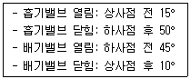
- 180°
- 230°
- 235°
- 245°
(정답률: 50%)
56. 디젤 엔진에서 과급기 설치 시의 장점으로 틀린 것은?
- 출력이 증가한다.
- 연료소비율이 감소된다.
- 착화지연 기간이 단축된다.
- 고지대에서 출력의 감소가 적다.
(정답률: 48%)
57. 디젤 엔진의 배출가스 후처리장치(DPF 또는 CPF)에서 필터에 포집된 PM의 재생시기를 판단하는 방법으로 틀린 것은?
- 주행거리에 의한 재생시기 판단
- 필터 전·후방 산소센서에 의한 재생시기 판단
- 필터 전·후방 압력차에 의한 포집량 예측 및 재생시기 판단
- 엔진조건 시뮬레이션에 의한 포집량 예측 및 재생시기 판단
(정답률: 40%)
58. 디젤 엔진의 연소과정 순서로 옳은 것은?
- 착화지연기간 → 폭발연소기간 → 직접연소기간 → 후연소기간
- 착화지연기간 → 직접연소기간 → 폭발연소기간 → 후연소기간
- 착화지연기간 → 폭발연소기간 → 후연소기간 → 직접연소기간
- 착화지연기간 → 직접연소기간 → 후연소기간 → 폭발연소기간
(정답률: 49%)
59. 전자제얼 연료분사장치에서 수온센서에 대한 설명으로 옳은 것은?
- 엔진의 온도를 높이고 낮추는 일을 한다.
- 냉각수 양을 조정하여 온도를 일정하게 한다.
- 냉각수 온도를 검출하는 일종의 저항기이다.
- 흡입 다기관의 통로에 설치되어 냉각수 양을 적절히 제어한다.
(정답률: 57%)
60. 가솔린 엔진과 비교한 LPG엔진에 대한 설명으로 틀린 것은?
- 대기오염이 적고 위생적이다.
- 동절기에는 시동성이 떨어진다.
- 혹한기에는 부탄의 비율을 높인다.
- 퍼컬레이션(percolation) 현상이 없다.
(정답률: 53%)
4과목: 자동차새시
61. 하이브리드 자동차 용어(KS R 0121)에 의한 하이브리드 정도에 따른 분류가 아닌 것은?
- 마일드 HV
- 스트롱 HV
- 풀 HV
- 복합형 HV
(정답률: 39%)
62. 다음 중 ABS 시스템의 고장진단에서 점검 사항으로 거리가 먼 것은?
- 톤 휠 간극
- 휠 스피드 센서
- ABS 컨트롤 모듈
- 제동력 감지 센서
(정답률: 43%)
63. 종감속 기어 중 하이포이드 기어의 장점이 아닌 것은?
- 기어의 물림률이 커 회전이 정숙하다.
- 추진축의 높이를 낮출 수 있어 자동차의 중심을 낮게 할 수 있다.
- 스파이럴 베벨기어에 비해 구동 피니언을 크게 할 수 있어 강도가 증대된다.
- 기어 이의 폭 방향으로 미끄럼 접촉을 하므로 저압윤활유 사용이 가능하다.
(정답률: 51%)
64. 다음 중 4륜 조향장치(4WS)의 적용 효과로 틀린 것은?
- 저속에서 동위상으로 하여 최소 회전 반지름을 감소
- 고속 선회에서 동위상으로 하여 차량의 안전성을 향상
- 경쾌한 고속 선회 가능
- 차로 변경이 용이
(정답률: 45%)
65. 하이브리드 자동차의 회생제동에 의한 에너지 변환 모드의 설명으로 옳은 것은?
- 운동에너지의 일부를 열에너지로 회수
- 운동에너지의 일부를 화학에너지로 회수
- 운동에너지의 일부를 전기에너지로 회수
- 전기에너지의 일부를 운동에너지로 회수
(정답률: 65%)
66. 자재 이음 및 슬립 이음 등의 자동차 추진축 주요 기능으로 틀린 것은?
- 구동 토크의 전달
- 각도 변화를 방지
- 비틀림 진동을 감쇠
- 축의 거리방향 변화를 보상
(정답률: 55%)
67. 다음 중 급제동 시 뒷바퀴가 먼저 고착되는 주요 원인으로 옳은 것은?
- 프로포셔닝 밸브 고착
- 앞 우측 캘리퍼 고착
- 앞 좌측 캘리퍼 고착
- 뒤 휠 실린더 누유
(정답률: 62%)
68. 자동차 및 자동차부품의 성능과 기준에 관한 규칙에서 연결자동차의 제동장치 기준으로 틀린 것은?
- 견인자동차의 공기식(공기배력유압식을 포함한다.) 제동장치를 갖춘 피견인자동차가 연결된 상태에서의 주차제동능력은 피견인자동차의 공기식 제동장치와 연동되지 아니한 상태에서 견인자동차의 주차제동장치의 전기적인 작동만으로 주차제동이 가능할 것
- 공기식(공기배력유합식을 포함한다.) 주제동장치가 설치된 견인자동차는 견인자동차와 피견인자동차 사이의 공기라인에 고장이 발생한 경우 자동적으로 공기가 차단되는 구조일 것
- 견인자동차의 주제동장치는 견인자동차와 피견인자동차 사이의 공기라인이 차단되는 경우 견인자동차를 정지시킬 수 있는 구조일 것
- 견인자동차의 주제동장치는 피견인자동차의 제동장치에 고장이 발생하는 경우에는 견인자동차를 정지시킬 수 있는 구조일 것
(정답률: 33%)
69. 코너링 포스(cornering force)와 코너링 파워(comering power)에 영향을 주는 요소가 아닌 것은?
- 림의 폭
- 타이어 크기
- 타이어 회전속도
- 타이어 수직 하중
(정답률: 40%)
70. 자동변속기의 댐퍼 클러치에 대한 설명으로 틀린 것은?
- 자동차 정지 시 사용한다.
- 터빈과 토크 컨버터 사이에 설치한다.
- 펌프와 터빈을 기계적으로 직결시켜 슬립에 의한 손실을 최소화시킨다.
- 동력전달 순서는 엔진-프런트 커버-댐퍼 클러치-변속기 입력축이다.
(정답률: 40%)
71. 브레이크 패드의 요구특성으로 틀린 것은?
- 내구성이 높을 것
- 환경 친화적일 것
- 열부하가 많이 걸려도 방열성이 좋고 경화되지 않을 것
- 고온과 고속 슬립 상태에서 마찰계수가 변화할 것
(정답률: 60%)
72. 타이어의 구조에서 직접 노면과 접촉되어 마모에 견디고 견인력을 좋게 하는 것은?
- 비드
- 카커스
- 트레드
- 브레이커
(정답률: 60%)
73. 전자제어 현가장치의 작동에 대한 설명으로 틀린 것은?
- 주행 조건에 따라 감쇠력이 변화한다.
- 노면의 상태에 따라 감쇠력이 변화한다.
- 항상 부드러운 상태로 감쇠력이 조정된다.
- 댐퍼의 감쇠력을 여러 단계로 설정하여 조정된다.
(정답률: 62%)
74. 수동변속기의 고장진단에서 기어가 빠지는 원인으로 옳은 것은?
- 엔진 공회전 속도가 규정과 불일치
- 기어 변속포크가 마모되었거나 포핏 스프링이 부러짐
- 샤프트 엔드 플레이가 부적당
- 변속기와 엔진 장착이 풀리거나 손상
(정답률: 54%)
75. 전자제어 자동변속기의 오일펌프에서 발생한 유압을 라인 압력으로 조정하는 밸브는?
- 댐퍼클러치 제어밸브
- 레귤레이터 밸브
- 변속조절 밸브
- 매뉴얼 밸브
(정답률: 48%)
76. 전자제어 동력 조향장치에서 저속으로 주행할 때 운전자의 조향 휠 조작력은?
- 무거워진다.
- 가벼워진다.
- 조작력과는 상관없다.
- 항상 일정한 조작력을 얻는다.
(정답률: 61%)
77. 브레이크 마스터 실린더에 대한 설명으로 틀린 것은?
- 앞 뒤 디스크 브레이크를 사용하는 형식은 체크밸가 없다.
- 텐덤 마스터 실린더는 앞, 뒤 제동력의 독립성을 위함이다.
- 체크밸브는 브레이크 라인 내에 잔압을 유지시켜 준다.
- 마스터 실린더의 보상구멍이 막히면 브레이크가 정상적으로 작동하지 않는다.
(정답률: 55%)
78. 어ᄄᅠᆫ 승용자동차를 섀시동력계에서 운전하여 측정한 자료가 구동륜에서 측정한 구동력 750N, 시험속도 100km/h이면 기관의 제동출력(kW)은? (단, 동력전달계 효율은 0.8이다.)
- 20.8
- 23.7
- 26.04
- 31.2
(정답률: 23%)
79. 제동초속가 50km/h, 자동차의 중량이 2000kgf이며, 회전 관성중량이 차량중량의 5%일 때 제동거리(m)는? (단, 제동력은 전륜이 각각 250kgf, 280kgf이고 후륜이 각각 360kgf, 400kgf이다.)
- 12
- 16
- 20
- 22
(정답률: 25%)
80. 다음 중 제동을 할 때 바퀴와 노면의 마찰력이 가장 클 때는?
- 브레이크 페달을 밟기 시작할 때
- 브레이크 페달을 밟는 힘이 가장 클 때
- 타이어가 노면에서 슬립을 일으키며 끌릴 때
- 타이어가 노면에서 슬립을 일으키기 직전일 때
(정답률: 50%)
5과목: 자동차전기
81. 자동차 CAN 통신 시스템의 종류로125kbps 이하에 적용되며 바디전장 계통의 데이터 통신에 응용하는 것은?
- Low Speed CAN
- High Speed CAN
- Ultra Sonic CAN
- Super Speed CAN
(정답률: 59%)
82. 점화 플러그의 구비조건으로 틀린 것은?
- 기계적 강도가 클 것
- 열전도 성능이 작을 것
- 강력한 불꽃을 발생할 것
- 기밀 유지 성능이 양호할 것
(정답률: 63%)
83. 자동차 냉방장치에서 고온·고압의 기체 냉매를 냉각시켜서 액화 상태로 변화시키는 것은?
- 건조기
- 증발기
- 응축기
- 팽창 밸브
(정답률: 63%)
84. 자동차규칙 중 후미등의 설치 및 광도기준에서 ( )안에 알맞은 것은?
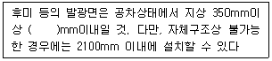
- 1200
- 1500
- 1700
- 2000
(정답률: 46%)
85. 오실로스코프를 사용한 교류 발전기 출력파형이 [보기]와 같이 나타났을 때, 다이오드와 스테이터 코일의 이상 유무를 판정한 것으로 틀린 것은?
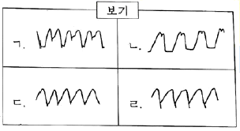
- ㄱ: 다이오드 1개 단락
- ㄴ: 다이오드 1개 단선
- ㄷ: 스테이터 코일 1상 단선
- ㄹ: 스테이터 코일 1상 단락
(정답률: 43%)
86. 자동차용 3상 교류 발전기에 대한 설명으로 옳은 것은?
- 로터는 3상 전압을 유도시켜 교류를 발생한다.
- B단자를 통해 로터부에 여자전류가 공급된다.
- 스테이터는 자화가 되어 발전될 수 있는 자계 형성부이다.
- 다이오드는 PN접합 반도체로 교류를 직류로 정류한다.
(정답률: 42%)
87. 다음 중 에어컨 작동 시 압력을 측정한 결과 고압은 정상보다 낮고 저압은 높게 측정되었다면 결함사항으로 옳은 것은?
- 압축기의 압축 불량이다.
- 냉매 충전량이 너무 많다.
- 에어컨 시스템에 공기가 혼입되었다.
- 에어컨 시스템에 수분이 혼입되었다.
(정답률: 47%)
88. 전기장치 작동에 대한 설명으로 틀린 것은?
- RPM이 증가함에 따라 타코미터는 흐르는 전류에 비례하여 감소한다.
- 바이메탈식 연료 게이지는 큰 전류가 흐르게 되면 계기의 지침은 F를 가리킨다.
- 송풍기 모터의 속도조절은 저항 또는 파워TR을 이용하여 저속, 중속으로 속도조절을 한다.
- 코일식 수온계는 서미스터(thermistor)를 사용하여 저항값이 변화하는 성질을 이용한 것이다.
(정답률: 44%)
89. 에어백 PPD(Passenger Presence Detect)센서가 감지하지 않는 것은?
- 승객 있음
- 승객 없음
- PPD 센서 고장
- 벨트 프리텐셔너 고장
(정답률: 50%)
90. 점화플러그의 불꽃전압에 대한 설명으로 틀린 것은?
- 혼합기의 압력이 클수록 불꽃전압이 크다.
- 전극의 온도가 높을수록 불꽃전압이 작다.
- 전극의 형상이 뽀족할수록 불꽃전압이 작다.
- 중심 전극을 (+)로 하는 것이 불꽃전압이 작다.
(정답률: 40%)
91. 하이브리드 자동차에 사용되는 모터의 작동원리는?
- 렌츠의 법칙
- 프레밍의 왼속 법칙
- 플레밍의 오른손 법칙
- 앙페르의 오른나사 법칙
(정답률: 51%)
92. 자동차 배터리 전해액 비중이 1.260이고 전해액의 온도가 40℃라면 표준온도에서의 비중은?
- 1.246
- 1.256
- 1.274
- 1.284
(정답률: 38%)
93. 자동차관리법령상 전조등 시험기의 검사기준에서 광축편차 판정정밀도 허용오차 기준은?
- ±5% 이내
- ±15% 이내
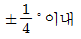
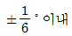
(정답률: 29%)
94. 1사이클(cycle) 중 ‘ON’되는 시간을 백분율로 나타낸 것은?
- 튜티율
- 피드백
- 주파수
- 페일 세이프
(정답률: 60%)
95. 광도 20000 cd의 광원에서 20m 떨어진 위치에 있어서의 조도(lx)는?
- 40
- 50
- 80
- 100
(정답률: 50%)
96. 자동차 전장회로도에서 확인할 수 없는 것은?
- 배선의 색상
- 부품의 품번
- 퓨즈의 용량
- 커넥터의 핀 번호
(정답률: 51%)
97. 디젤엔진에서 예열플러그가 단선되는 주요원인으로 틀린 것은?
- 엔진 출력이 감소될 때
- 예열시간이 너무 길 때
- 규정값 이상의 과대전류가 흐를 때
- 예열플러그 릴레이 접점이 고착되었을 때
(정답률: 57%)
98. 납산배터리의 방전 시 화학 반응으로 옳은 것은?
- PbSO4+2H2O+Pb
- PbSO4+2H2SO4+Pb
- PbSO4+2H2O+PbSO4
- PbO2+22H2SO4+PbSO4
(정답률: 50%)
99. 병렬(하드방식)하이브리드 자동차에서 엔진의 스타트&스톱 모드에 대한 설명으로 옳은 것은?
- 주행하던 자동차가 정차 시 항상 스톱모드로 진입한다.
- 스톱모드 중에 브레이크에서 발을 떼면 항상 시동이 걸린다.
- 배터리 충전상태가 낮으면 스톱기능이 작동하지 않을 수 있다.
- 스타트 기능은 브레이크 배력장치의 입력과는 무관하다.
(정답률: 47%)
100. 후진 경고 장치의 주요 구성부품은?
- 레인 센서
- 조도 센서
- 블루투스
- 초음파 센서
(정답률: 59%)